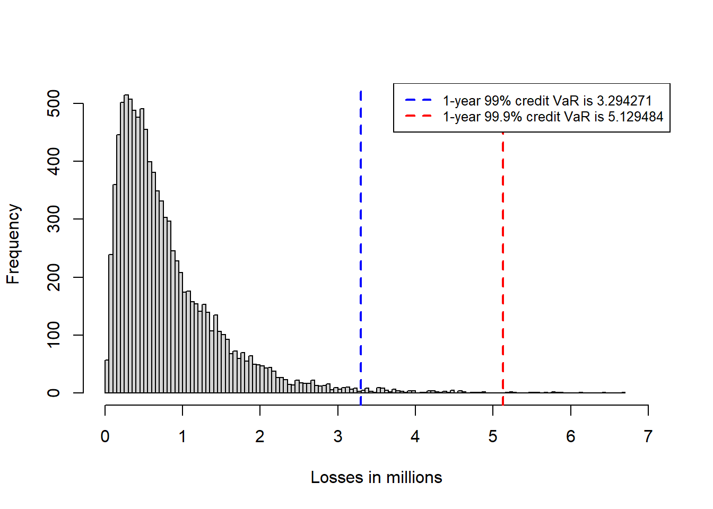
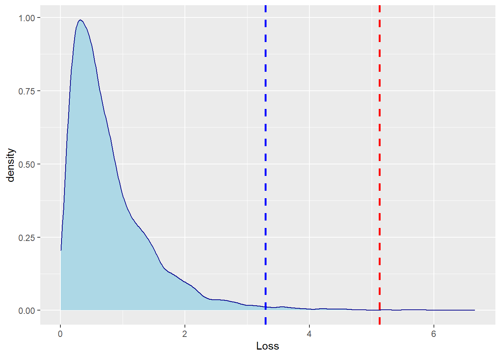

4 Credit VaR example 24.7.
This replicates Hull (2015) example 24.7.
This is the Vasicek model (equation 24.10) in a function form.
CVaR <- function(exp, pd, r, c, l) {
v <- pnorm((qnorm(pd) + (c^0.5) * qnorm(l)) / (1 - c)^0.5)
VaR <- exp * v * (1 - r)
}See if it works. Let’s evaluate equation 24.10 at 99% and 99.9%. The 1-year 99% and 99.9% credit VaR is:
CVaR.999 <- CVaR(100, 0.02, 0.6, 0.1, 0.999)
CVaR.99 <- CVaR(100, 0.02, 0.6, 0.1, 0.99)
CVaR.999## [1] 5.129484CVaR.99## [1] 3.294271Let’s evaluate the model at all confidence levels (from 0 to 1) simulating 10,000 values.
set.seed(13)
l <- runif(10000, 0, 1)
Loss <- CVaR(100, 0.02, 0.6, 0.1, l)
sim.var999 <- sort(Loss)[10000 * 0.999]
sim.var99 <- sort(Loss)[10000 * 0.99]Now, visually:
hist(Loss, 100, xlim = c(0, 7), xlab = "Losses in millions", main = NULL)
abline(v = CVaR.999, lty = 2, col = "red", lwd = 2)
abline(v = CVaR.99, lty = 2, col = "blue", lwd = 2)
legend("topright", legend = c("1-year 99% credit VaR is 3.294271",
"1-year 99.9% credit VaR is 5.129484"),
col = c("blue", "red"), lwd = 2, lty = 2, bg = "white", cex = 0.8)

Figure 4.1: Distribution of losses.
dat <- data.frame(Loss, l)
ggplot(dat, aes(x = Loss, fill = "Losses in millions")) +
geom_density(color = "darkblue", fill = "lightblue") +
geom_vline(aes(xintercept = CVaR.999),
color = "red", linetype = "dashed", size = 1) +
geom_vline(aes(xintercept = CVaR.99 ),
color = "blue", linetype = "dashed", size = 1)

Figure 4.2: Distribution of losses.
Nice.